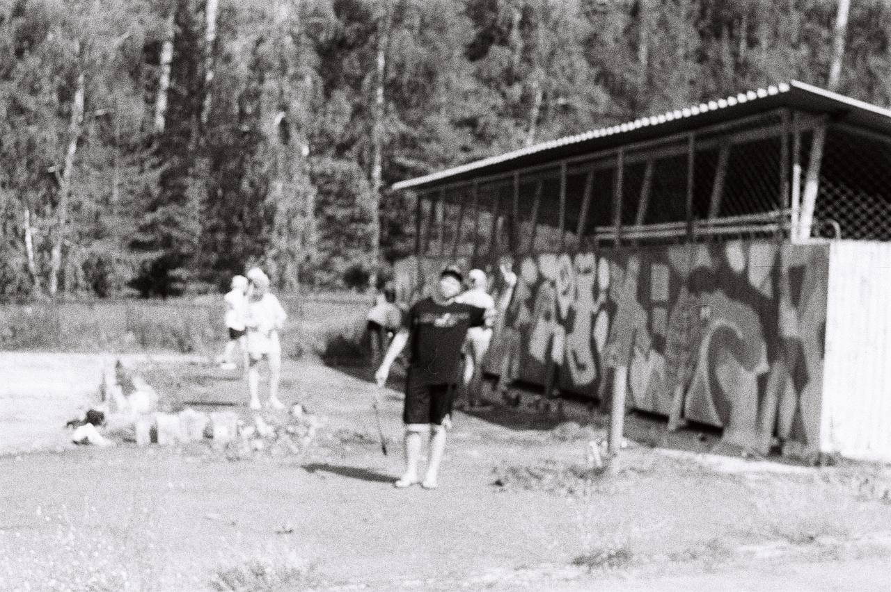
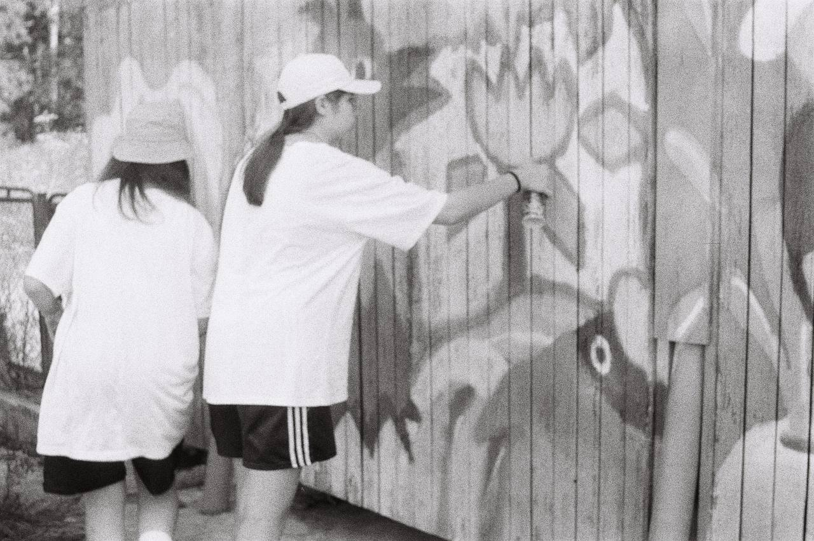
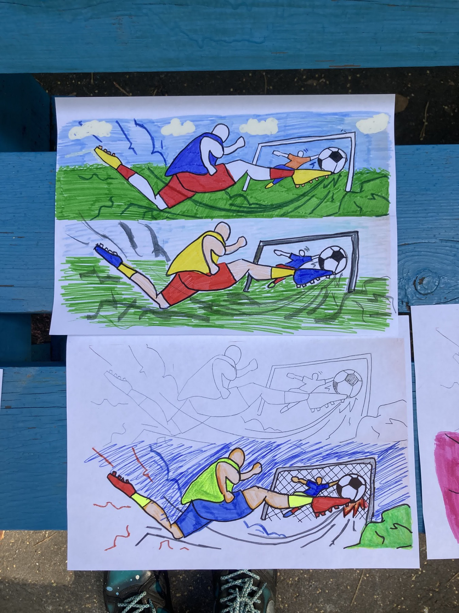

Футбол

Работа создана на стадионе рядом с футбольным полем. Она передаёт энергию матча и связывает уличное искусство с местом, где проходят тренировки, игры и встречи команд.



Работа создана на стадионе рядом с футбольным полем. Она передаёт энергию матча и связывает уличное искусство с местом, где проходят тренировки, игры и встречи команд.


